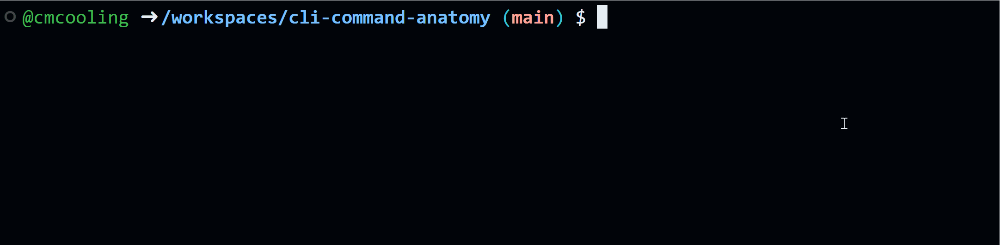

A terminal usually displays a prompt to show it is ready for input. The prompt often includes the current working directory and a symbol such as $ or >. The exact prompt format varies by shell and operating system. A typical prompt might look like this:
/home/user/ $ A cursor shows where the next character will appear. Users type commands and run them by pressing Enter.

The above animation shows the process of typing the command ls and pressing Enter to execute it. The output of the command is displayed below the command, and a new prompt appears ready for another command.
A CLI command typically has three parts:
-l or --long).A common pattern is:
command [options] [arguments]Exactly which options and arguments are valid depends on the specific command, but this general structure is common across CLI tools.
For example, in Unix-like systems, ls lists the contents of the current directory. In its simplest form, type ls and press Enter. It may produce output like this:
file1.txt file2.txt directory1/Options modify command behavior. For example, -l makes ls show more detail for each file or directory:
ls -lThis might produce output like:
-rw-r--r-- 1 user user 1234 Jan 1 12:00 file1.txt
-rw-r--r-- 1 user user 5678 Jan 1 12:00 file2.txt
drwxr-xr-x 2 user user 4096 Jan 1 12:00 directory1/You do not need to understand every column yet; the key point is that the option changed the output format.
Arguments tell the command what to operate on. For ls, we can pass a directory name:
ls directory1/This lists the contents of directory1/ instead of the current directory.
Commands can combine options and arguments. For example, we can use -l and also specify a directory:
ls -l directory1/This would display detailed information about the contents of directory1/.
Some options require a value. For example, --output may need a file name to say where output should be saved:
command --output output.txtHere, --output is the option and output.txt is the value provided for that option.